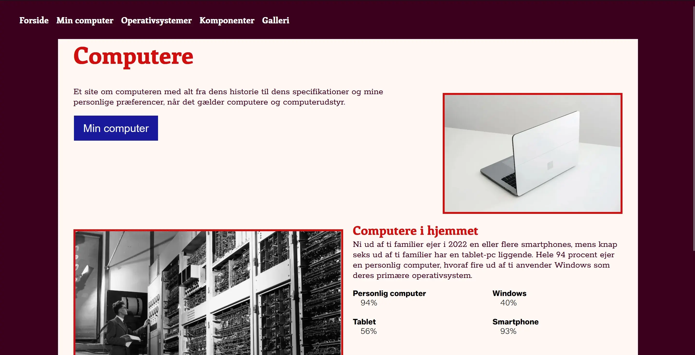
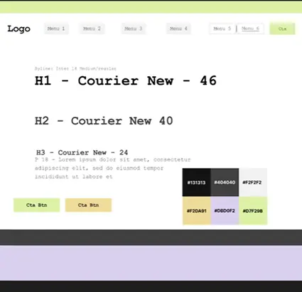
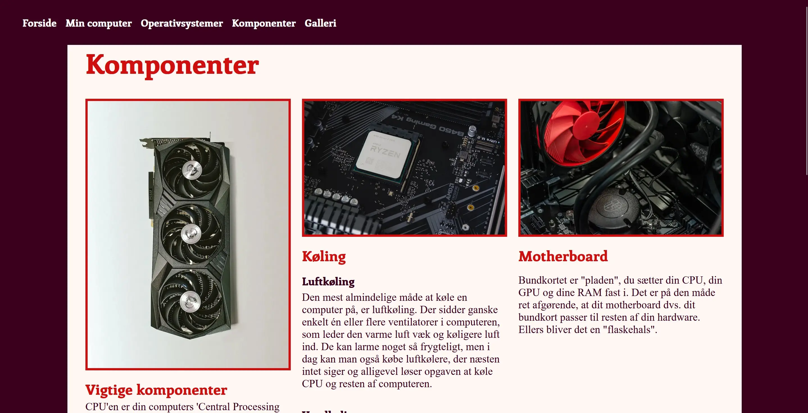
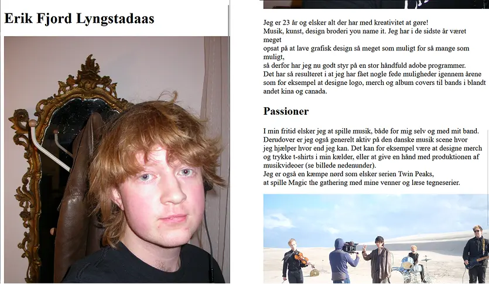
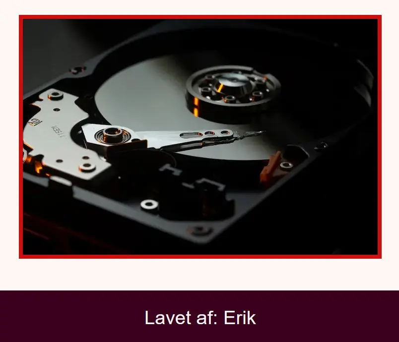

Tema 2
Grundlæggende web

Temaet
Dette tema var vores første kig på html og css, igennem flere opgave små sites fik vi lært om grids, flere linkede html dokumenter og billedbehandling Visitkort side, Styletile implementering, gridøvelser og første hjemmeside med flere sider, billedbehandling


Formålet
Formålet med det første rigtige tema var at give en grundlæggende introduktion til de mest anvendte redskaber i en multimediedesigners værktøjskasse.
Redskaber som grundlæggende faglige begreber inden for design af digitale brugergrænseflader, digital indholdsproduktion, digital kommunikation og responsivt webdesign, opsætning af websider med html og css samt opsætning af tekst og billeder i figma.

Proces
Processen bag dette tema var mere fokuseret på at få et fodfæste med kodning, så der blev kodet og læst op på forskellige termer og funktioner/tags.
Til styletile delen af opgaven skulle vi selv ud af finde en hjemmeside på internettet som vi syntes var fed, derefter skulle vi så prøve at koge stilen ned til et såkaldt “styletile” som så efterfølgende skulle implementeres på en hi-fi wireframe i figma.
jeg var igennem en god håndfuld hjemmesider som jeg syntes fungerede godt og havde et fedt udtryk. Jeg alle siderne samtidigt på forskellige faneblade og eliminerede dem en ad gangen til jeg stod tilbage med den jeg brugte, derfra var det bare at tage farverne, fontene og CTA og sætte det sammen.
Til vores computer site var det lige med at holde tungen i munder med grids og at finde ude af hvordan det lige var det fungerede.
Løsning
Til visitkortsiden endte jeg med en meget simple hjemmeside med info om mig selv samt nogle billeder der passede til teksten. Jeg har kodet lidt før så det var ikke det sværeste at få stablet lidt tekst på benene.
I styletile delen gik jeg med et tøjmærke der hedder “brain dead”s hjemmeside, jeg tog samtlige farver og fonte ved hjælp af “inspect element” og samlede det på et figma board som jeg efterfølgende implementerede på en hi-fi wireframe så den lignede den originale hjemmeside.
Til den endelige "store" hjemmeside om vores computer fandt jeg en farvepallette som jeg inkorporerede og så var det bare at aflæse layoutdiagrammer så gridsene stod som de skulle.


Læring og reflektion
Da jeg har brugt det sidste halvår før jeg startede på EK ved at skrive kode og designe på NEXT fik jeg ikke det store ud af kodnings delen af dette tema, dog var det godt at komme i gang igen med at skrive kode og lære om grids da jeg førhen kun havde brugt flex.
Figma var et meget nyt program for mig og det var godt at få brugt det til noget man reelt kan bruge fremover.